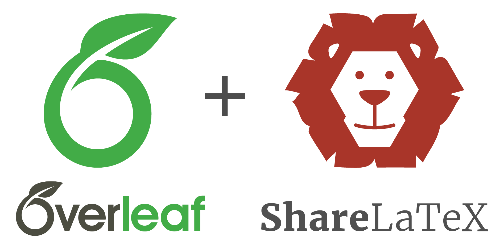

Módulo 4
Redacción académica con LaTeX
Redacción académica con LaTeX
En este módulo aprenderemos a usar LaTeX como herramienta de redacción académica para crear documentos formales, artículos científicos, guías de clase y tesis.
Trabajaremos con dos enfoques complementarios:
- Overleaf → plataforma en la nube, colaborativa y accesible desde cualquier navegador.
- TeX Live local → instalación libre y completa en tu computador, ideal para independencia y reproducibilidad.
De esta manera, cada docente podrá escoger el flujo que más se ajuste a su contexto, o incluso combinar ambos.

Objetivos de aprendizaje
Al finalizar este módulo podrás:
- Comprender la estructura básica de un documento en LaTeX.
- Redactar textos académicos con secciones, listas, citas y referencias.
- Insertar ecuaciones matemáticas, tablas y figuras en tus materiales.
- Usar Overleaf para trabajar de manera colaborativa y TeX Live local para independencia total.
- Versionar proyectos en GitHub para mayor transparencia y reutilización.
Herramientas principales
- Overleaf: editor online colaborativo → https://www.overleaf.com
- TeX Live: distribución completa de LaTeX para uso local.
- VS Code con LaTeX Workshop o TeXstudio: editores recomendados para compilar en tu PC.
- GitHub: control de versiones y publicación de proyectos académicos.
Anatomía de un documento en LaTeX
Un documento básico en LaTeX se construye con tres partes:
- Preambulo → configuración de idioma, paquetes y estilo.
- Cuerpo → secciones, párrafos, ecuaciones, tablas y figuras.
- Referencias → bibliografía en formato BibTeX.
Ejemplo mínimo:
\documentclass[12pt,a4paper]{article}
\usepackage[utf8]{inputenc}
\usepackage[T1]{fontenc}
\usepackage[spanish]{babel}
\usepackage{amsmath, amssymb}
\usepackage{graphicx}
\usepackage{booktabs}
\usepackage[colorlinks=true,linkcolor=blue,urlcolor=blue]{hyperref}
\title{Guía de Clase en \LaTeX}
\author{Nombre del Docente}
\date{\today}
\begin{document}
\maketitle
\section{Introducción}
Este es un ejemplo de documento académico escrito en \LaTeX.
\section{Ecuaciones}
La famosa fórmula de Einstein:
\[
E = mc^2
\]
\section{Tablas}
\begin{table}[h]
\centering
\begin{tabular}{lrr}
\toprule
Estudiante & Nota 1 & Nota 2 \\
\midrule
Ana & 6.0 & 5.5 \\
Luis & 5.8 & 6.2 \\
\bottomrule
\end{tabular}
\caption{Ejemplo de tabla de notas}
\end{table}
\section{Referencias}
Texto con cita \cite{knuth1984texbook}.
\bibliographystyle{plain}
\bibliography{refs}
\end{document}Archivo refs.bib (bibliografía)
@book{knuth1984texbook,
author = {Donald E. Knuth},
title = {The TeXbook},
year = {1984},
publisher = {Addison-Wesley}
}👉 Este archivo externo permite mantener una bibliografía organizada y escalable.
Flujo en Overleaf (colaborativo)
- Crear un nuevo proyecto en Overleaf.
- Copiar el código de ejemplo en
main.tex. - Subir el archivo
refs.bibcon tus referencias. - Invitar a un colega o estudiante para trabajar en conjunto.
🔑 Ventajas:
- No requiere instalación.
- Permite colaboración en tiempo real.
- Historial de cambios y chat integrado.
👉 Ideal para papers compartidos, proyectos grupales y guías de clase.
Flujo local (independencia total)
Instalar TeX Live en tu computador (Windows, Linux o Mac).
Usar VS Code con la extensión LaTeX Workshop o TeXstudio.
Compilar en terminal con:
pdflatex main.tex bibtex main.aux pdflatex main.tex pdflatex main.texSubir el proyecto a GitHub para versionarlo y compartirlo.
🔑 Ventajas:
- Funciona sin internet.
- Total control de paquetes y estilos.
- Reproducibilidad asegurada en cualquier entorno académico.
👉 Ideal para tesis, libros o documentos de gran tamaño.
🔍 Comparación rápida
| Aspecto | Overleaf 🌐 | TeX Live local 💻 |
|---|---|---|
| Instalación | No requiere | Sí, distribución completa |
| Colaboración | En tiempo real | Manual (Git/GitHub) |
| Accesibilidad | Cualquier navegador | Solo tu computador |
| Flexibilidad | Limitada a los paquetes en Overleaf | Total control |
| Ideal para | Papers y proyectos colaborativos | Tesis y flujo reproducible |
Actividad práctica
Abre Overleaf y crea un nuevo proyecto.
Redacta un documento con:
- Un título y autoría.
- Una ecuación matemática.
- Una tabla con datos ficticios de estudiantes.
- Una referencia bibliográfica en formato BibTeX.
Descarga el proyecto en
.zipy súbelo a tu repositorio de curso en GitHub.(Opcional) Repite los pasos en TeX Live local y compara ambos flujos.
Resultado esperado
Al terminar este módulo tendrás:
- Un documento académico en LaTeX con portada básica.
- Una ecuación matemática correctamente renderizada.
- Una tabla con datos ficticios.
- Una referencia bibliográfica en BibTeX.
- Proyecto colaborativo en Overleaf y/o flujo reproducible en TeX Live local.